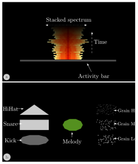
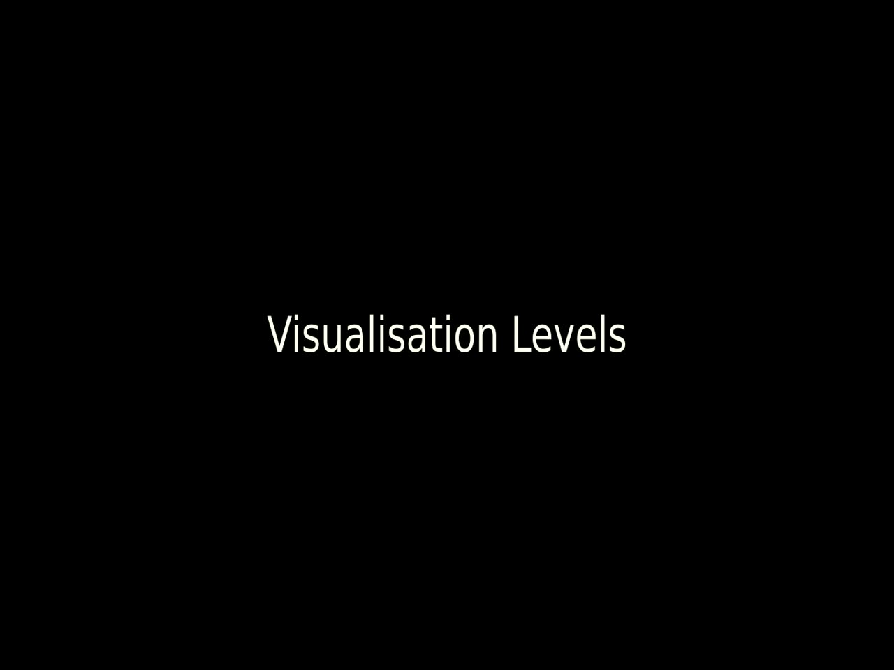
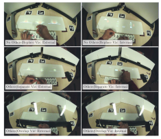
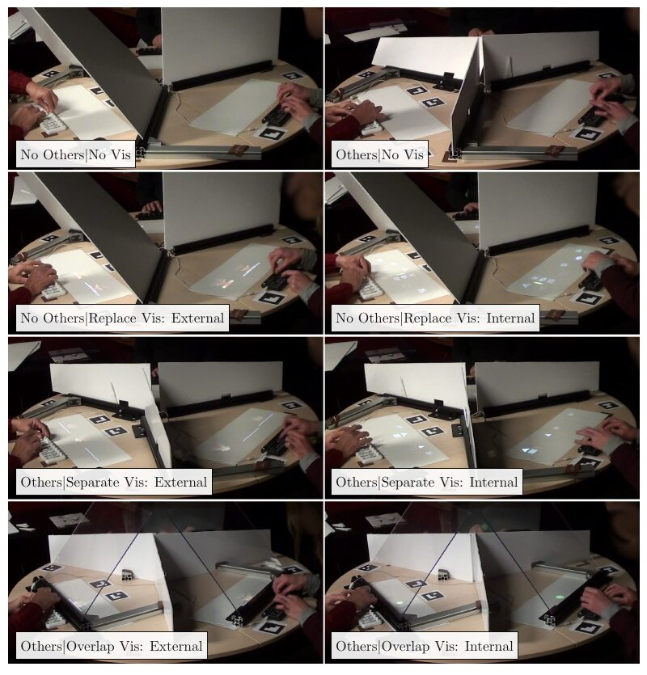
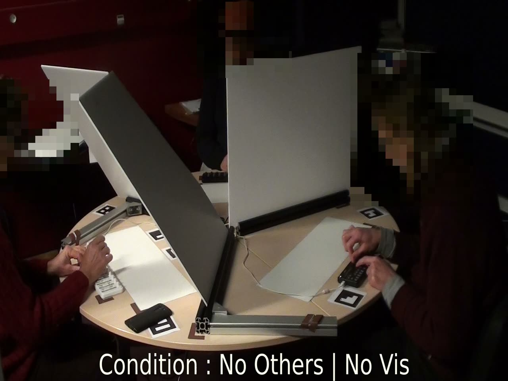
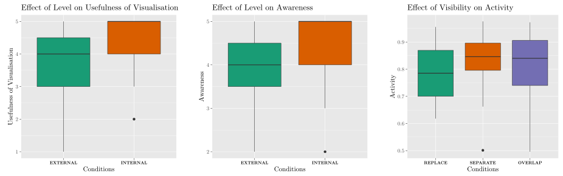

The Effect of Visualisation Level and Situational Visibility in Co-located Digital Musical Ensembles
Abstract
Digital Musical Instruments (DMIs) offer new opportunities for collaboration, such as exchanging sounds or sharing controls between musicians. However, in the context of spontaneous and heterogeneous orchestras, such as jam sessions, collective music-making may become challenging due to the diversity and complexity of the DMIs and the musicians’ unfamiliarity with the others’ instruments. In particular, the potential lack of visibility into each musician’s respective contribution to the sound they hear, i.e. who is playing what, might impede their capacity to play together. In this paper, we propose to augment each instrument in a digital orchestra with visual feedback extracted in real-time from the instrument’s activity, in order to increase this awareness. We present the results of a user study in which we investigate the influence of visualisation level and situational visibility during short improvisations by groups of three musicians. Our results suggest that internal visualisations of all instruments displayed close to each musician’s instrument provide the best awareness.
Introduction
Electronic and digital technologies allow designers to create Digital Musical Instruments (DMIs) whose form, interface, and sonic output are unconstrained by the physical limitations of acoustic instruments. The resulting complexity, diversity, and potential unfamiliarity of a DMI’s interface and sonic output may make it difficult for audience members to comprehend what musicians are actually doing during a performance [1]. This problem may be exacerbated in the case of ensembles employing several DMIs. If the instruments are also unfamiliar to other musicians in the ensemble, such as in the case of a spontaneous jam session, these issues might prevent musicians from understanding each other’s contributions and therefore impede their ability to respond or anticipate as they might in an ensemble comprised of familiar instruments.
We can describe this situation as suffering from insufficient means of awareness, which is the ability to perceive and understand the actions of other actors within a collaborative environment [2] [3]. One way awareness can be facilitated is by providing task-specific artifacts that are visible to the participants [4][5]. Attempts at mitigating the impediments to awareness when using DMIs have often relied on the use of graphical displays — which we call visualisations — to depict each musician’s contribution, thus making them visible to the other musicians [6] or the audience [7].
In this paper we investigate the effects of visualisation design and situational visibility on musicians’ experience of performing with DMIs in spontaneous co-located orchestras, i.e. with musicians together in the same physical space. (However, we note that similar issues also arise in networked digital orchestras.)
In particular, we want to know whether a visualisation derived only from a DMI’s control input and audio output is sufficient to afford awareness amongst the musicians, or whether visualising internal aspects of the instrument’s activity is preferred.
And we want to investigate the effect of musicians’ ability to see each other, and potential interactions with the location of any visualisations. We therefore define situational visibility as the design space that encompasses the physical arrangement of the performance space, and the placement of visualisations within that space, with respect to how these affect visibility amongst participants.
We present the results of a study on groups of three musicians, in which we evaluate the musicians’ experience through quantitative and qualitative analyses. From these results, we derive insights on the use of visualisations to improve awareness in Digital Ensembles.
Related work
Previous research on collaborative musical interfaces has underlined the benefits of using visual feedback. Blaine and Fels [8] propose media as one dimension of collaborative musical experiences, and note that visual imagery can improve collaboration by “reinforcing the responsiveness of the system”. They also note that visualisations can distract from attending to other musician’s actions and sound, a result that we also found in our study.
Fencott et al. [9] studied the effect of shared and private visual spaces in 2D collaborative musical interfaces. And Men and Bryan-Kinns [10] found that in shared virtual environments (SVEs) increasing the visibility of others’ private spaces positively impacts collective music-making.
Bryan-Kinns et al. [11] demonstrated that improving awareness (by identifying participants with colours) could promote mutual engagement in collective music-making. They also suggested that providing information on the activity and focus of others could further strengthen mutual engagement [12], inline with previous research on SVEs [2]. As a result, collaborative instruments often support awareness through the use of colours and notifications, e.g. [13].
Visualisations can also be added to instruments which do not depend on a GUI for controlling the sound. Perrotin et al. [7] proposed representations of musicians in the graphical space (i.e., gestures performed on the interface) or in the musical space (i.e., symbolic representation of notes), which according to a short study seemed to help audience members understand the contribution of each.
This added feedback can be especially helpful in the case of heterogeneous ensembles and jam sessions where instruments can be diverse and unfamiliar. In the context of improvisation, Merrit et al. [6] designed a visualisation to help musicians understand each other’s contribution, using a temporal representation of the produced audio signal. Berthaut and Dahl proposed an interface for interconnecting DMIs and which displays the activity (the audio output and parameter changes) of each instrument [14].
However, while previous work has emphasised the importance of visualisations for awareness, to our knowledge, no investigation has been conducted on the impact of the level of visualisations or the way they are displayed to musicians.
User study
We are interested in how visualisations affect musicians’ experience of awareness when performing DMIs in co-located musical ensembles. Our user study investigates these by controlling two dimensions of the performance space: visualisation level and situational visibility.
Visualisation level concerns the design of graphical displays for making the activity of each instrument visible to the other musicians. We compare two levels: internal and external. We want to know if it is sufficient to provide information based on a musician’s input to their instrument (i.e. changing parameter values) and the resulting audio output, as proposed in Merritt et al. [6]. We call this visualisation style external, because it relies on information outside the instrument. We note that this data is relatively simple to extract.
The second visualisation level (internal), provides more detailed access to the structure and inner activity of the instrument by decomposing it into the modules that comprise it, and displaying these individually, as proposed by Capra et al. [1]. However this requires exposing the internal structure of the DMIs to the visualisation software, which may not be possible.
In the dimension of visualisation level we want to test the following hypothesis:
H1 : Using internal visualisation leads to a better experience of collective music-making, because it provides more detailed visibility of the contribution and actions of each musician in the ensemble.
We also believe it is essential to study how the physical arrangement of the performance space, including the articulation of any visualisations within that space, can improve or impede musicians’ awareness, non-verbal communication, and experience of making music as a group. Deploying display technologies` such as shared projections, individual mobile displays, augmented reality (AR) headsets, etc., may improve the situational visibility.
We chose five conditions of situational visibility which are based on whether the musicians can see each other, whether visualisations are provided, and their placement.
No Others | No Vis: The musicians have no ability to see the other musicians, and no visualisation is provided.
Others | No Vis: Each musician can directly see the other musicians and their interactions with their instruments. No visualisation is provided.
No Others| Replace Vis: The musicians cannot see each other. And each musician sees a visualisation of the activity of all three musicians. In effect the visualisation replaces the ability to see the other musicians.
Others | Separate Vis: The musicians can see each other. And each musician sees a visualisation of the activity of all three musicians next to their own instrument, visually separated from the other musicians.
Others | Overlap Vis: Each musician can see the other musicians directly. And the visualisations are presented so that they visually overlap with the musician’s view of each other musician. (This could be implemented, for example, using an optical combiner, AR headsets, or mobile AR.)
Our hypothesis regarding the conditions of situational visibility is :
H2 : Overlapped visualisations (Others | Overlap Vis), where the musicians can see the visualisation co-located with the physical musicians, leads to a better collective music making experience, because it affords both non-verbal communication and added information.
Apparatus
During the experiment, three musicians were seated around a table. The visualisations were displayed using an overhead projector, and various configurations of foam board and acrylic panels were employed to create the situational visibility conditions, as shown in Figure 4.
The three musicians in each group were given identical instruments. This choice was made in order to reduce their ability to quickly learn who is doing what based only on each instruments’ sound. (In a spontaneous jam session with heterogeneous instruments it might also be difficult to discern agency due to unfamiliarity with the others’ instruments. [15] ) At the same time, because each instrument is composed of three distinct sound processes, musicians can choose different roles and sonic organisations.
Each musician controls their instrument with a Korg NanoKontrol MIDI controller. This device is organised into 8 tracks, each composed of three buttons, a linear potentiometer, and an angular potentiometer. Only the first three tracks are used for our instrument, and each track controls one of the three sound-generating processes of the instrument.
The first track controls a rhythmic pattern with kick, snare, and hi-hat sounds. Each button activates one sound, e.g. the first button toggles the kick pattern on or off. The knob controls the rhythmic dynamism, by increasing the pitch of the snare and kick, and adding a delay to the hi-hat. The fader controls the volume of all three percussion sounds.
The second track generates a melodic pattern played on a sine-wave oscillator. The fader controls the amplitude of the oscillator, and the knob controls its pitch (discretised to a major scale). The three buttons allow for switching between a slow rhythm with soft attacks, a medium rhythm, and a fast rhythm with more percussive attacks.
The third track controls three granular synthesizers, each using a source sound with a different frequency range (low, medium, high). These are activated independently using the three buttons. The fader again controls the overall gain, while the knob changes the window and grain size of the three granular synthesizers so that the sound texture goes from a smooth to very chaotic.
Visualisations
We designed two graphical visualisations (see Figure 3 for a video demonstration), as instances of the external and internal levels described above.


The two visualisation levels : a) external visualisation which represents the audio output and control input, and b) internal visualisation which provides a detailed representation of the control actions and activity of each sound process of the instrument.
The external visualisation, shown at the top of Figure 1, displays the musician’s actions on their instrument and the resulting audio output of the instrument. These two aspects are displayed as an activity bar, which appears whenever the musician interacts with the MIDI controller and fades out when the interaction ends, and a spectral display of the instrument’s audio output. Placed just above the activity bar, the spectral display shows the spectrum of the most recent audio, using a horizontally stacked bar with a vertical line of symmetry. Bins of increasing frequency are displayed from the centre to the sides, with a colour scale from red to yellow. The overall loudness therefore corresponds to the width of the bar. These spectrum bars move upward, showing a history of previous spectra. These design decisions were based on recommendations from Merritt et al. [6].
The internal visualisation, shown at the bottom of Figure 1, provides a detailed representation of the controls and internal activity of all three tracks of the instrument (and therefore requires access to the internal components of the instrument.) Its design is based on results from research on audio visual mappings [16] [17] where different shapes and visual textures indicate different timbres, colors are used to represent changes in pitch, and size represents loudness.
The rhythmic track is represented on the left, with distinct shapes for the kick, snare, and hi-hat. Each shape appears when its sound is triggered. The shape gets wider as the rhythmic dynamism increases. And the shape’s transparency decreases as the volume increases.
The melodic track is represented in the centre with a single circle. The colour hue changes as the pitch changes. Changes in width correspond to variations in the amplitude envelope, and therefore the selected rhythm for the melody. The transparency of the circle represents the volume.
Finally, on the right, three visual textures are used to represent the three granular synthesizers, with point densities and sizes that represent the high, medium and low frequency ranges. These textures appear when the corresponding sound is activated, and they become more animated as the sonic texture changes from smooth to chaotic. The transparency of the visual texture represents the volume.

▶Video demonstrating the two visualisation levels (https://assets.pubpub.org/2pxak7dk/71649682327416.mp4)
Situational Visibility Conditions
In order to investigate the effect of situational visibility on collective music-making, and especially on musicians’ experience of awareness, we designed a spatial augmented reality display which allows us to control how musicians see the other musicians and any visualisations.


How one musician sees the visualisation depending on the visibility condition (Others or No Others, and Replace, Separate, or Overlap) and the visualisation level (Internal, or External).
We define three visibility conditions. In the No Others | Replace Vis condition, large cardboard panels are used to hide the other musicians entirely and the visualisations of all three instruments are displayed next to each musician’s instrument. The visualisations are arranged so that a musician’s instrument is located in the centre, and the visualisations for the other two musicians are to the left and right, as seen in Figure 3 top row.
In the Others | Separate Vis condition, the cardboard panels are smaller and hide only the space in front of each musician’s instrument (but not their hands or instrument), as seen in Figure 3 middle row. And the visualisations are still displayed next to each instrument. The effect is that the musicians can see each other directly, but they have to look down to see the visualisations.
Finally, in the Others | Overlap Vis condition, the visualisation of each instrument is physically placed in front of the corresponding musician. To do so we employed an optical combiner at an angle of 45° which reflects the visualisation and makes it appear to float above the controller, as seen in Figure 3 bottom row. Therefore, to see the visualisations the musicians have to look directly at each other.
Experimental Conditions
Our experiment followed a within-subjects 2*3 factorial design with the factors Visualisation Style (External, Internal) and Situational Visibility (No Others| Replace Vis, Others | Separate Vis, Others | Overlap Vis). The two control conditions (No Others | No Vis, Others | No Vis) are used to compare with the absence of visualisations. These experimental conditions, (corresponding to the 8 sessions that each group of musicians will perform) are shown are shown in Figure 4 .


The 8 experimental conditions: No Others | No Vis; Others | No Vis; No Others | Replace Vis: External; No Others | Replace Vis: Internal; Others | Separate Vis: External; Others | Separate Vis: Internal; Others | Overal Vis: External; Others | Overlap Vis: Internal.
A video of the eight experimental conditions, combining the two visualisation levels and four conditions of situational visibility, can be found in Figure 5.

▶Video demonstrating the experimental conditions (https://assets.pubpub.org/y8hc5d4h/51649684612468.mp4)
Protocol
After a brief introduction to the study, the three musicians in each group sat around the table, each in front of a MIDI controller. One musician was equipped with a Pupil Core eye-tracking headset. (Eye tracking data was not analysed in this paper). The details of the instrument were explained, and then each musician was able to learn the instrument by exploring freely for 5 minutes.
The group then performed 8 sessions, one for each of the conditions described above. For each condition participants played together for 3 minutes. At the beginning of each minute they were given a task: Minute 1: Respond to what the others are playing; Minute 2: Play something different from the others; Minute 3: Finish the session together. So each group performed together for a total of 24 minutes. The order of tasks was the same for all conditions, but the order of conditions was counterbalanced across groups to avoid a presentation order effect.
After finishing each condition, each musician answered a series of 8 questions, using a 5-level Likert scale, on their perceived level of:
A Shared Musical Experience.
Awareness, i.e. understanding what the other musicians are doing.
Ability to accomplish the Tasks.
The Usefulness of the visualisation.
Each of these four aspects was addressed by two questions: a positive statement, and a negative statement. For example, Shared Musical Experience was probed with the statements “I felt that I was involved in a shared musical experience” and “I did not feel involved with the others in this performance”. The responses to the two questions were combined to obtain a score for each aspect.
After answering the questionnaire, musicians were invited to freely comment on any aspect of their experience, and the audio of these discussions were recorded. After the completion of all sessions, participants were asked which visualisation level and situational visibility condition they preferred.
We also recorded activity logs from the participants’ interaction with their instruments, from which we calculated:
The quantity of interaction, i.e. the number of parameter changes.
The variety, which varies from 0.0, if only one parameter has been used, up to 1.0, if all parameters were used equally.
The activity, calculated as the ratio of non-silent time over total time. Activity is 0.0 if the musician was never active, and 1.0 if the participant was active the entire session.
Fifteen musicians (5 groups of 3) took part in the experiment. All identified as male, and the mean age was 39 years (SD=6.08, Max=48, Min=30). They had between 10 and 35 years of musical practice of an instrument, and between 0 and 30 years of experience of playing in ensembles. Some had experience playing only in ensembles of acoustic instruments, while others had experience only in digital ensembles. All musicians participated voluntarily and signed an informed consent form. All sessions took place in 2018.
Results
Here we report the results of analysing the questionnaires, activity logs, and post-task discussions.
For the questionnaire and logs, we performed a repeated-measures two-factorial (2 visualisation levels * 3 visibilities) Bayesian ANOVA (using JASP v0.14.3 [18]) followed by post-hoc tests when the Bayes factor showed sufficient evidence of an effect. We chose to use Bayesian statistics in order to obtain a finer-grained of analysis of our data [19]. This Bayes Factor can show strong evidence of no effect (as the factor approaches 0.0), no evidence of an effect (when the factor is close to 1.0), or increasing evidence of an effect (as the factor increases above 1.0). We interpret the Bayes Factor using the scale proposed in JASP.
We report results that have at least moderate evidence, and discuss them along with the musicians’ feedback. Plots of significant results are shown in Figure 6.


Plots of the significant results from analysing the logs and questionnaires. Plot 1: The effect of Visualisation Level on the Usefulness of the visualisations. Plot 2: The effect of Visualisation Level on the musicians’ Awareness. Plot 3: The effect of Visibility condition on the musicians’ Activity.
Questionnaires
From analysing the musicians’ responses to the questionnaire after each session, we found strong evidence of an effect of Visualisation Level on the Usefulness of visualisation (=9.571). This was confirmed by a post-hoc test where the internal visualisation level was found to be more useful than the external visualisation level (=7.128).
We also found very strong evidence of an effect of Visualisation Level on Awareness (=39.866). Post-hoc tests revealed strong evidence for a higher perceived awareness when using the internal visualisation (=82.551).
Finally, we observed moderate evidence for an absence of effect of Visualisation Level on the perceived ability to perform the task (=0.167).
Activity logs
From analysing the activity logs we found strong evidence of an effect of Situational Visibility on the activity, (=29.514). Post-hoc tests revealed moderate evidence of differences, with higher activity in Separate than in Replace (=3.488), and higher activity in Overlap than in Replace (=2.748). I.e., activity was higher when the other musicians were visible. There is, however, moderate evidence of an absence of difference between Overlap and Replace (=0.195).
Preferences
When asked for the preferred Level and Visibility, a majority of musicians (9/15) chose the Separate visibility condition, and a majority (10/15) chose the Internal visualisation level.
Feedback
Musician’s feedback was captured after each session through note-taking and by transcribing recordings of musicians’ comments. However, the analysis of recorded audio was performed for only 3 of the 5 groups, because the videos of two groups were lost due to technical issues.
We saw three main themes emerging, which explain and support the findings from the questionnaires and logs. The first relates to situational visibility: There did not seem to be a consensus on looking at each other, with some musicians clearly communicating through non-verbal channels (e.g. nodding) while other communicated not at all :
P2 : "We noticed that we did not look at each other".
Moreover, musicians commented on the fact that they preferred to focus on the visualisations, all displayed next to each other (i.e. the Separate condition.):
P5: “I prefer the version where you have all the musicians [i.e. the visualisations projected on the table] , you look at a screen, you’re not disrupted.”
P4: “It’s less tiring, you have the information immediately.”
The second theme addresses the effect of visualisation level on collective playing. The musicians found the internal visualisation very useful (P3 : "almost too easy") for improving interactions with the other musicians, while the external was less useful, especially when the sounds produced by the musicians were more complex. According to P6, external visualisation afforded only knowing whether someone played very loudly, whereas with the internal visualisation:
P8: "... seeing the shape move you can tell in which direction they are going, so if you want to [follow them], or the opposite, …but in any case you can adapt.”
The fact that the information is provided through symbolic representations improves the learning curve:
P2: “shapes look a lot more like music theory [than the spectrum], so you get used to it quickly”
Participants also emphasised that having the same instruments helped them understand the internal visualisation:
P5: “Because you understand your instrument, you understand the others’, so it’s true that it works well”
P11: “Shapes help also because it’s the same instrument, so we know which sound each shape is responsible for. Would this work for different instruments ?”
This was especially true when compared with the external visualisation :
P5: “It’s true that because we have the same instruments, if the game is to do like the others, follow each other, then you don’t hesitate, it’s right away. Whereas with the spectrum, sometimes you don’t know if it’s a melodic sound in the bass frequencies or a texture, or a kick.”
However, the fact of having the same instrument can also make it challenging to recognise who is doing what, but this is partly addressed by the visualisation:
P8: “I have the impression that I understand better the symbols, so I understand what the others are doing: I see them go, I see the effect they apply, I see what they’re doing, which is not obvious [from the sound alone] because we all have the same instrument.”
The last theme relates to the potential negative effect of internal visualisation on listening. Participants reported that at first that they had to focus on the visualisation, which reduced their ability to listen to the other musicians :
P2: “The first time I had this sort of shapes, I was (focused) on them, I listened less.”
P12: "Visuals require focus. When there are none, you listen more."
P7 : "Without visuals, you listen a lot more."
This could be due to the large amount of visual information provided, which might reduce the attention available for listening, and might take one out of the sense of flow and playing together:
P6: “This visualisation gives more information, and it slowed down the expressiveness, I was in a more cerebral mode, reflecting, so I felt the music less, there were fewer phases where we could build .”
P7 :"You’re more immersed, but more solo."
Some participants therefore thought that the absence of visualisation could also be of interest :
P2: "Not knowing who is doing what is also interesting for a performance."
However some musicians seemed to adapt to the use of visualisations. P1 commented that at first the visualisation disrupted his usual way of listening and the feeling of playing together, and this required him to focus more, but after some time he got used to it and looked at the visualisation more.
Discussion
In this section, we combine our findings from the logs, questionnaires, and the feedback in order to discuss the effect of the Visualisation Level and Visibility.
These findings should however be taken with precaution due to several limitations, such as the relatively small number of participants, their lack of gender diversity, and their uneven experience with DMIs. A more gender-diverse selection of participants, or a more consistent level of experience with DMIs, may have led to different results, such as stronger differences between conditions or even different outcomes!
Visualisation level
Our results, supported by evidence from the questionnaire and feedback, demonstrate a clear preference for the internal-style of visualisation, over external, therefore confirming our first hypothesis.
Attending to the internal visualisation seemed to improve the musicians’ awareness by helping them understand what the other musicians were doing, thereby making it easier to adapt and respond to each other. This could be due to the level of detail that represents each of the separately-perceived sound processes of the instrument, and displays multiple aspects of the sound for each of these processes. Compared to the internal style, the external visualisation provided much less detail for both the instrument’s input and output.
However, this result may be biased by the use of the same instrument for all musicians. Once accustomed to their own instrument and the corresponding visualisations, participants might quickly comprehend and respond to the changes they saw in the other instruments. Therefore, an essential research question is how to represent diverse sound processes, in a unified and homogeneous way that can quickly afford familiarity in digital ensembles with diverse instruments.
Situational visibility
We did not find support for our hypothesis that using overlapped visualisation would improve awareness and be preferred. Participants preferred separate visualisation and found it less disrupting to not have to look at the other musicians. They also favoured having the visualisation of each musician’s activity in the same location, which may be because it allows a musician to perceive the range of the other musicians’ contributions in a quick glance.
The musicians’ focus on the visualisations, to the detriment of visual attention toward the physical presence of the other musicians, could be explained by low familiarity with their instruments. This might cause the musicians to concentrate on their controller, and may have constrained their ability to initiate non-verbal communication. However this possibility is contradicted by the fact that participants did not express any difficulty in using the instrument, and that some musicians did actually look at the other musicians.
The analysis of logs also provides evidence that seeing the other musicians, in addition to the visualisations, led to a higher activity ratio, which suggests that having a combination of physical and virtual feedback on the ensemble motivates musical engagement.
Conclusion
In this paper, we investigated the use of visualisations of musicians activity in order to improve awareness in co-located digital musical ensembles, and we looked at the effect of the visualisation level (external or internal) and the visibility afforded by various arrangements of the performance space (i.e. the situational visibility).
Our results suggest that in order to be effective, these visualisations should be displayed together next to each musician’s instrument, and they should represent the detailed internal activity of all instruments in the ensemble. When doing so, visualisations seem to help musicians understand what the others are doing and consequently adapt their contribution. However, these visualisations may have an unintended effect on the collective music-making, by shifting the musicians’ focus from active listening to a more cerebral process, confirming an idea proposed by Blaine and Fels [8]. However, it may be that this is the case only during the learning period.
In this study, we focused on homogeneous ensembles, i.e. with musicians all playing the same instrument. This facilitated musicians’ ability to relate to each others’ activity, and reduced their need to learn about the others’ instruments. In the case of ensembles with heterogeneous instruments, and especially in the case of spontaneous jam sessions, the deployment and design of visualisations, and the careful consideration of the situational visibility can have a significant impact on the success of such ensembles.
We note that implementing internal visualisations of DMIs requires access to the inner structure of the instrument. Developing a standard protocol to describe and represent the inner structure of DMIs in a unified manner could facilitate further research, and potentially lead to improved awareness and more satisfying experiences for musicians in digital ensembles.
As future work, we therefore plan to investigate whether unified representations of the structure and internal activity of DMIs might help ensure the familiarity of any instrument within digital ensembles. We also envision studying the long term effect of such visualisations and situational visibility arrangements on ensembles, across a series of rehearsals and performances.
Ethics Statement
All participants participated freely and signed an informed consent form. Collected data remained anonymous and was stored on University servers. Funding for this project was provided by the authors’ respective institutions.
Citations
- ↩Capra, O., Berthaut, F., & Grisoni, L. (2020). All you need is LOD : Levels of detail in visual augmentations for the audience. In R. Michon & F. Schroeder (Eds.), Proceedings of the international conference on new interfaces for musical expression (pp. 67–72). Birmingham City University. https://doi.org/10.5281/zenodo.4813236
- ↩Benford, S., Bowers, J., Fahlén, L. E., & Greenhalgh, C. (1994). Managing mutual awareness in collaborative virtual environments. Proceedings of VRST, 223–236.
- ↩Berthaut, F., & Dahl, L. (2016). BOEUF: A Unified Framework for Modeling and Designing Digital Orchestras. Lecture Notes in Computer Science, 9617, 153–166. https://doi.org/10.1007/978-3-319-46282-0{\textbackslash}_10
- ↩Klemmer, S. R., Hartmann, B., & Takayama, L. (2006). How bodies matter: Five themes for interaction design. Proceedings of the 6th Conference on Designing Interactive Systems, 140–149.
- ↩Dahl, L. (2012). Wicked problems and design considerations in composing for laptop orchestra. NIME.
- ↩Merritt, T., Kow, W., Ng, C., McGee, K., & Wyse, L. (2010). Who makes what sound?: Supporting real-time musical improvisations of electroacoustic ensembles. Proceedings of the 22nd SIGCHI Australia.
- ↩Perrotin, O., & d’Alessandro, C. (2014). Visualizing gestures in the control of a digital musical instrument. 14th International Conference on New Interfaces for Musical Expression (NIME 2014), 605–608.
- ↩Blaine, T., & Fels, S. (2003). Contexts of collaborative musical experiences. Proceedings of NIME 03, 129–134.
- ↩Fencott, R., & Bryan-Kinns, N. (2010). Hey man, you’re invading my personal space! Privacy and awareness in collaborative music. NIME, 198–203.
- ↩Men, L., & Bryan-Kinns, N. (2019). LeMo: Exploring virtual space for collaborative creativity. In Proceedings of the 2019 on creativity and cognition (pp. 71–82).
- ↩Bryan-Kinns, N., & Hamilton, F. (2012). Identifying mutual engagement. Behaviour & Information Technology, 31(2), 101–125.
- ↩Bryan-Kinns, N. (2013). Mutual engagement and collocation with shared representations. International Journal of Human-Computer Studies, 71(1), 76–90.
- ↩Benford, S., Bowers, J., Fahlén, L. E., & Greenhalgh, C. (1994). Managing mutual awareness in collaborative virtual environments. Proceedings of VRST, 223–236.
- ↩Çakmak, C., Çamci, A., & Forbes, A. G. (2016). Networked virtual environments as collaborative music spaces. NIME, 106–111.
- ↩Perrotin, O., & d’Alessandro, C. (2014). Visualizing gestures in the control of a digital musical instrument. 14th International Conference on New Interfaces for Musical Expression (NIME 2014), 605–608.
- ↩Merritt, T., Kow, W., Ng, C., McGee, K., & Wyse, L. (2010). Who makes what sound?: Supporting real-time musical improvisations of electroacoustic ensembles. Proceedings of the 22nd SIGCHI Australia.
- ↩Berthaut, F., & Dahl, L. (2020). Adapting & openness: Dynamics of collaboration interfaces for heterogeneous digital orchestras. New Interfaces for Musical Expression.
- ↩Merritt, T., Kow, W., Ng, C., McGee, K., & Wyse, L. (2010). Who makes what sound?: Supporting real-time musical improvisations of electroacoustic ensembles. Proceedings of the 22nd SIGCHI Australia.
- ↩Capra, O., Berthaut, F., & Grisoni, L. (2020). All you need is LOD : Levels of detail in visual augmentations for the audience. In R. Michon & F. Schroeder (Eds.), Proceedings of the international conference on new interfaces for musical expression (pp. 67–72). Birmingham City University. https://doi.org/10.5281/zenodo.4813236
- ↩Capra, O., Berthaut, F., & Grisoni, L. (2020, July). Have a SEAT on Stage : Restoring Trust with Spectator Experience Augmentation Techniques. Designing Interactive Systems (DIS). https://doi.org/10.1145/3357236.3395492
- ↩Merritt, T., Kow, W., Ng, C., McGee, K., & Wyse, L. (2010). Who makes what sound?: Supporting real-time musical improvisations of electroacoustic ensembles. Proceedings of the 22nd SIGCHI Australia.
- ↩Berthaut, F., Desainte-Catherine, M., & Hachet, M. (2010). Combining audiovisual mappings for 3D musical interaction. International Computer Music Conference, p 100.
- ↩Adeli, M., Rouat, J., & Molotchnikoff, S. (2014). Audiovisual correspondence between musical timbre and visual shapes. Frontiers in Human Neuroscience, 8, 352.
- ↩JASP Team. (2021). JASP (Version 0.14.3)[Computer software]. https://jasp-stats.org/
- ↩Kay, M., Nelson, G. L., & Hekler, E. B. (2016). Researcher-centered design of statistics: Why bayesian statistics better fit the culture and incentives of HCI. Proceedings of ACM CHI.
- ↩Blaine, T., & Fels, S. (2003). Contexts of collaborative musical experiences. Proceedings of NIME 03, 129–134.